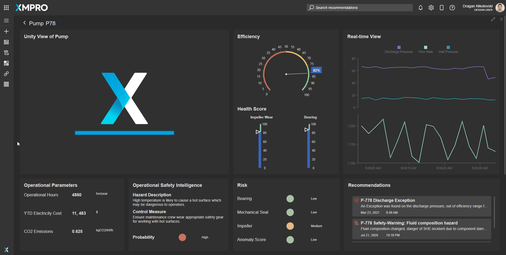
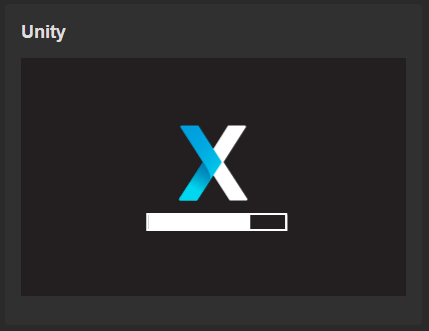
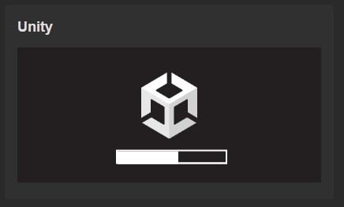

Unity
The Unity Block can display data that is received via the Data Source and it is interactive by configuring the Action on the Button or any other component that has that option to update the Data Source.
Warning
This Block only supports Unity 2020 and above and Unity WebGL content is not currently supported on mobile devices.
For Unity 2019 use the Unity (Legacy) Block.
Note
Unity integration with an App
Use the XMPro Integration asset on the Unity Asset Store. The asset includes a demo project and its own documentation and tutorial.
Note
Disable Keyboard Capture
Is your keyboard non-responsive once a Unity model is loaded? Follow this guide to prevent the keyboard input from being locked to the Unity model.


Model Interaction
You can interact with models that have been designed in Unity to be interacted with, by using the controls/events that the model was designed to use.
Unity Properties
Appearance
Common Properties
The visibility property is common to most Blocks;
See the Common Properties article for more details on common appearance properties.
Loading Bar Image
This property gives the user an option to upload an image that will be displayed on top of the loading bar.

The default option is the Unity logo and the loading bar.

Loading Bar Color
This will change the color of the default bar to the selected color.
Behavior
Here we need to configure the Unity control. All files come from the Unity build itself.
Code File
Select the Unity web assembly code file.
The Code File property is required for the Unity Block.
Data File
Select the Unity data file.
The Data File property is required for the Unity Block.
Framework File
Select the Unity framework file.
The Framework File property is required for the Unity Block.
Note
For more details on how to upload or manage files, see the Manage App Files article.
Data Source
Common Properties
A Data Source is used to send data to the Unity Block. Properties that are common to most Blocks include: filter, sort, show # of results, and skip # of results;
See the Common Properties article for more details on common Data Source properties.
Last modified: May 25, 2025